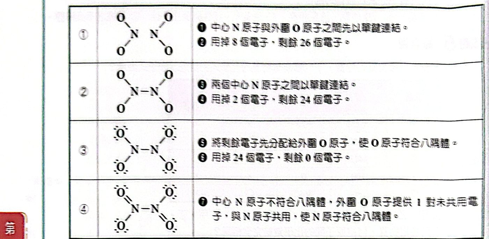
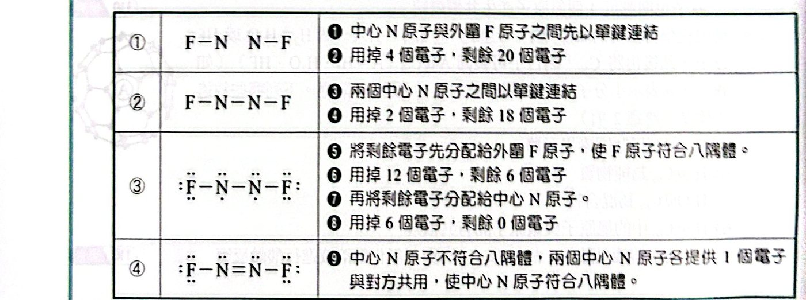
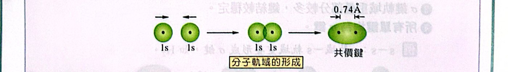
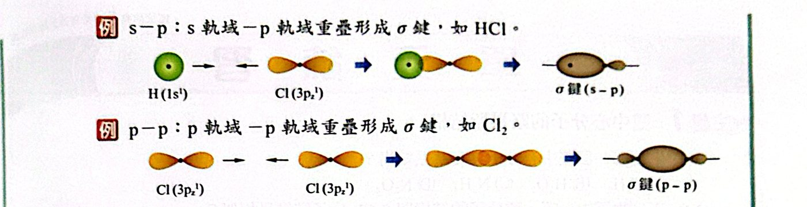
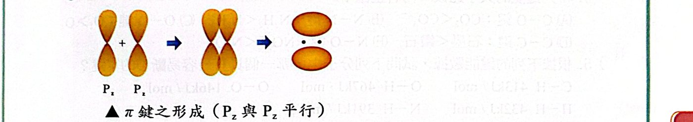

重點整理
一、雙中心分子的路易斯結構
步驟與單中心相同，只是兩個中心原子之間也要先以單鍵相連。
1. N2O4：價電子總數 ＝ 5×2 ＋ 6×4 ＝ 34
1. N 與外圍 O 先以單鍵相連（用 8 個，剩 26）
2. 兩個 N 之間以單鍵相連（用 2 個，剩 24）
3. 剩下的分給外圍 O 使其滿足八隅體（用 24 個，剩 0）
4. N 不滿足八隅體 → 各由一個 O 提供一對電子形成 N＝O 雙鍵

N2O4 路易斯結構的畫法
2. H2O2：1×2 ＋ 6×2 ＝ 14 → H−Ö−Ö−H（每個 O 兩對孤對）
3. N2F2：5×2 ＋ 7×2 ＝ 24 → :F̈−N̈＝N̈−F̈:（兩個 N 各提供 1 個電子形成 N＝N）

N2F2 路易斯結構的畫法
二、價鍵理論
1. 價鍵理論
用原子價軌域重疊來描述共價鍵的生成。兩原子要形成化學鍵，價軌域必須發生重疊。
H2 的形成
1. 兩原子相距無窮遠時，位能 ＝ 0。
2. 靠近時，核與電子間的引力 ＞ 核間及電子間的斥力，位能降低。
3. 相距 3.5 Å 以內時，兩個 1s 軌域開始部分重疊，重疊愈多愈穩定。
4. 相距 0.74 Å 時位能最低，兩個 1s 電子被兩核共用 → 共價鍵。
5. 再靠近則斥力 ＞ 引力，位能迅速上升。

1s 軌域重疊形成 H2
2. 軌域重疊的方式
(1) σ 鍵：價軌域以頭碰頭方式沿核間軸重疊。
- 電子雲對稱分布在核間軸周圍
- 可繞軸旋轉
- 重疊部分較多，鍵結較穩定
- 所有單鍵都是 σ 鍵
- 種類：s−s（H2）、s−p（HCl）、p−p（Cl2）

s−p、p−p 形成 σ 鍵
(2) π 鍵：兩個平行的 p 軌域以肩並肩（側對側）方式重疊。
- 電子雲在核間軸的上、下方，核間軸上電子雲密度為零
- 不能繞軸旋轉
- 重疊較少，鍵結較弱
- 伴隨 σ 鍵出現在多鍵中

平行 pz 重疊形成 π 鍵
例題與類題
看答案與詳解收起
答(B)(C)
解
- (A) C2H6：全是單鍵
- (B) C2H4：C＝C 雙鍵 ✓
- (C) C2H2：C≡C 參鍵 ✓
- (D) H2O2：H−O−O−H 全是單鍵
- (E) N2F4：F2N−NF2，每個 N 三個單鍵＋一對孤對，全是單鍵
看答案與詳解收起
答(A)
解N2：N≡N；N2F2：F−N＝N−F；N2H4：H2N−NH2
鍵級愈大鍵能愈大 ⇒ N2 ＞ N2F2 ＞ N2H4
看答案與詳解收起
答(C)
解兩個 1s 軌域重疊後的 H2 分子軌域呈橢球形（沿核間軸拉長），不是球形。其餘正確。
看答案與詳解收起
答(D)
解
- (A) NH3 的孤對 ＋ H+ 的空軌域 → 配位共價鍵
- (B) 兩個半填滿 1s → H2
- (C) NH3 的孤對 ＋ BF3 中 B 的空軌域 → 配位共價鍵
- (D) He 的 1s 已全填滿，兩個全滿軌域不能重疊 → 不能成鍵
看答案與詳解收起
答(D)
解(D) 分子 CH3−CCl＝CCl−CH3（C4H6Cl2）：
- C−H：3×2 ＝ 6 個 σ
- C−CH3：2 個 σ；C−Cl：2 個 σ；C＝C：1σ ＋ 1π
- 合計 11 個 σ、1 個 π，題目說 10σ、2π 錯誤。
(A)(B)(C) 正確。
看答案與詳解收起
答(A)
解
- CO2：O＝C＝O → 2 個 π
- SO2：O＝S−O（共振）→ 1 個 π
- SO3：一個 S＝O → 1 個 π
- H2O：0 個
單元練習
看答案與詳解收起
答(D)
解N2O4：每個 N 連兩個 O，其中一個 N＝O、一個 N−O，雙鍵位置可以互換 → 有共振。
C2H2、H2O2、N2H4 都只有一種結構。
看答案與詳解收起
答(C)
解S2Cl2：價電子 6×2＋7×2 ＝ 26 → Cl−S−S−Cl，每個 S 上兩對孤對。
與 H−O−O−H（H2O2）結構相似（O、S 同族）。
看答案與詳解收起
答(B)
解C−C 鍵級：乙烷 1、苯 1.5（共振）、乙烯 2、乙炔 3
鍵長 ⇒ 甲 ＞ 丁 ＞ 乙 ＞ 丙
看答案與詳解收起
答(C)(E)
解鍵級大者鍵能大：
- (A) ✗ CO2（2）＞ CO32−（4/3）
- (B) ✗ N2H2（雙鍵）＞ N2H4（單鍵）
- (C) ○ O2（2）＞ O3（1.5）
- (D) ✗ 石墨 C−C 鍵級 4/3 ＞ 金剛石 1，石墨較大
- (E) ○ NO3−（4/3）＜ N2O4 的 N−O（1.5）
看答案與詳解收起
答(B)
解最容易斷的單鍵 ＝ 鍵能最小的：O−O（146 kJ/mol），存在於過氧化氫 H−O−O−H 中。
看答案與詳解收起
答(D)
解
- (A) NO2 有未成對電子，兩分子可結合成 N2O4
- (B) NH3 孤對 ＋ H+ → NH4+
- (C) H2O 孤對 ＋ H+ → H3O+
- (D) NH4+ 已沒有孤對電子，無法提供給 BF3 → 不能成鍵
看答案與詳解收起
答(A)(C)(D)
解
- (A) ○
- (B) ✗ π 鍵在核間軸上的電子雲密度為零
- (C) ○
- (D) ○ s 軌域是球形，只能頭碰頭重疊
- (E) ✗ p−p 頭碰頭可形成 σ 鍵（如 Cl2），平行才形成 π 鍵
看答案與詳解收起
答(B)
解
- (A) ✗ π 鍵重疊較少，比 σ 弱
- (B) ○ 兩原子間只能有一個 σ 鍵
- (C) ✗ 最多 2 個 π 鍵
- (D) ✗ 雙鍵是 1σ ＋ 1π
- (E) ✗ π 鍵不能旋轉
看答案與詳解收起
答(A)(C)(D)
解
- (A) ○ s−s 頭碰頭 → σ
- (B) ✗ s 從側面接近直立的 p：正負兩瓣重疊互相抵消，不能成鍵
- (C) ○ 兩個水平 p 頭碰頭 → σ
- (D) ○ 兩個直立 p 平行並排 → π
- (E) ✗ 直立 p 與水平 p 互相垂直，不能有效重疊
看答案與詳解收起
答(B)(C)(E)
解N≡N、O＝C＝O、H−C≡N 都有多鍵 → 有 π 鍵。H2、NH3 只有單鍵。
看答案與詳解收起
答(B)(C)(E)
解
- (A) HC≡CH 有 2π
- (B) CH3OH 全單鍵 ✓
- (C) 環丙烷 全單鍵 ✓
- (D) HCHO 有 C＝O
- (E) CH3NH2 全單鍵 ✓
看答案與詳解收起
答(D)
解分子式 C7H6O2：原子數 15，有 1 個環 ⇒ σ 鍵 ＝ 15 − 1 ＋ 1 ＝ 15
π 鍵：苯環 3 個 ＋ C＝O 1 個 ＝ 4
看答案與詳解收起
答(D)
解TCNE（C6N4）：原子數 10，無環 ⇒ σ 鍵 ＝ 9
π 鍵：C＝C 1 個 ＋ 4 個 C≡N 各 2 個 ＝ 9
看答案與詳解收起
答(E)
解
- 甲 ✗ 平面：CO2（直線）、C2H4、BH3、SO3 ＝ 4 個（C2H6、NH3 不是）
- 乙 ○ 有 π 鍵：CO2、C2H4、SO3 ＝ 3 個
- 丙 ○ 有孤對：CO2（O 上）、SO3（O 上）、NH3 ＝ 3 個
看答案與詳解收起
答(E)
解:N≡N:、H−N̈＝N̈−H、H2N̈−N̈H2
- (A) ✗ 孤對都是 2 對
- (B) ✗ 鍵結電子對：N2 3、N2H2 4、N2H4 5，順序相反
- (C) ✗ 鍵級愈大鍵長愈短：N2 ＜ N2H2 ＜ N2H4
- (D) ✗ N2H4 的 N 為 sp3，約 107°，不是 120°
- (E) ○ N2H2 的 N 為 sp2，含雙鍵，整個分子為平面